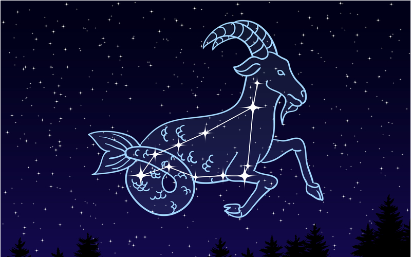

|  |
Lado positivo, o capricorniano é ambicioso e disciplinado. É prático, prudente, tem paciência e é até cauteloso quando preciso. Tem um bom senso de humor e é reservado.lado negativo, o capricorniano tende a ser pessimista e, ante a situações difíceis, é um pouco fatalista. Às vezes lhe custa ser generoso e fazer favores de forma altruísta. |
|---|